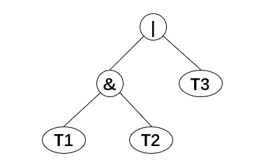

利用二叉树构造范式
从逻辑表达式中提取主合取范式和主析取范式
真值表法
- 对于一个命题公式 A，如果它包含: 等逻辑关系，普遍的求范式的步骤为：
- 消去 A 中的
- 否定连接词 ! 内移并消除
- 使用分配律
- 因此对于这样的命题公式 A 很难使用构造树再递归构造范式的方式，因此考虑使用真值表法获取范式
- 即根据真值表的取值获取最小项和最大项，继而构造主析取范式和主合取范式
- 算法步骤：
- 获取命题公式 A，并判断其输入合法性
- 计算 A 中变元个数
- 将 A 的中缀表达式转为后缀表达式
- 穷举变元的取值，带入表达式中计算
- 根据计算值即可得到最小项和最大项
- 构造主析取范式和主合取范式并输出
具体代码实现在网上有很多
例如C++实现求主析取范式、主合取范式
二叉树递归法
考虑命题公式 A 中只含有 的情况
创建二叉树
- 要建立一颗二叉树，首先要得到 A 的后缀表达式
- 以 PPT 的命题公式 为例，其后缀表达式为
- 首先读入变元 c, d，因此创建两颗单结点树并指向它们的指针压入栈中
- 接着读入 &, 因此指向两棵树的指针被弹出，形成一棵新的树，并将指向它的指针压入栈中
- 然后 b 被读入，同样创建单结点树并压入栈中
- 接下来读入 |, 因此，弹出两棵树的指针合并形成一棵新的树，| 是它的根
- 然后 a, b 被读入，创建单结点树并压入栈中
- 接下来读入 |, 两棵树合并
- 最后读入 &, 两棵树合并，指向最后的树的指针留在栈中

根据二叉树构造合取范式
- 考虑合取范式的标准形式:
- 在合取范式构造的二叉树中，节点有如下几种情况
- | 的子节点只能是变元 N 或 | 算子
- & 的子节点可以是变元也可以是 &, |, 变元 N
- 变元 N 只能做叶子结点
- 因此只需要搜索 父结点为 | 的 & 结点 ，并作相应的变换即可得到合取范式的二叉树，仍需考虑以下两种情况
- | 的子节点之一为 &
- | 的子节点均为 &
- 在合取范式构造的二叉树中，节点有如下几种情况
| 的子节点之一为 &
-
仍以 为例，考虑下图中子树
- 中序表达为，利用分配律转换为合取范式即为 ，转化为二叉树即为：
- 中序表达为，利用分配律转换为合取范式即为 ，转化为二叉树即为：
-
由此可以得到 | 的子节点之一为 & 时，二叉树的变换方法：
- 记该 | 结点的 & 左右子树为 T1, T2，非 & 子树为 T3
 - 将该子树转换为下图形式，即将(T1,T3), (T2,T3) 分别作为两个 | 结点的左右子树，再将两颗 | 子树连接到一个 & 结点上
- 记该 | 结点的 & 左右子树为 T1, T2，非 & 子树为 T3
-
因此，在构造二叉树后，利用后序遍历整颗二叉树，修正不规范的 | 结点即可。
| 的子节点均为 &
- 考虑以下情况：
- 可以仿照上述方法，指定左子树为 “T3”，即可得到如下二叉树：

- 但考虑到使用后序遍历，不会再遍历生成的 | - & 子树，所以需要一步到位，构建如下子树，具体构造规则不再赘述。
根据二叉树构造合取范式
- 核心思想和构造合取范式类似，只是将 | 与 & 互换，此处不再赘述。
构造步骤
以合取范式为例
- 获取合法的逻辑公式
- 将逻辑公式转化为后缀表达式
- 根据后缀表达式构造二叉树
- 后序遍历二叉树，将其他的二元逻辑连接词如$ \rightarrow, \leftrightarrow$按照规则转化为合取式
- 后序遍历二叉树，将 ! 结点按如下图方式下沉，直至其子节点为叶子结点
- 后序遍历二叉树，修正非法 | 结点
- 中序遍历二叉树，输出合取范式
小结
- 这个方法有存储空间爆炸的风险
- 需要多次遍历二叉树，效率低下
本博客所有文章除特别声明外，均采用 CC BY-SA 4.0 协议 ，转载请注明出处！